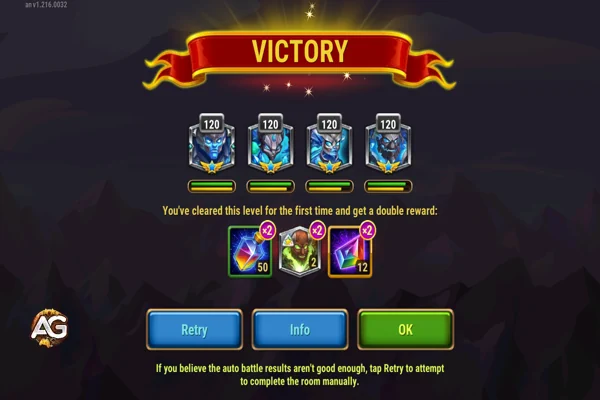

Índice
- Entendendo a Masmorra e a Titanita
- Priorizando as Melhores Melhorias para os Titãs
- Estratégia Eficiente para Ganhar Ouro
- Gerenciamento de Recursos: Poções e Artefatos
- Estratégias Avançadas para Níveis Mais Profundos da Masmorra
- Composições de Titãs: Quais Elementos Priorizar
- Habilidades e Artefatos Principais dos Titãs para o Sucesso na Masmorra
- Masmorra Infinita com Verdoc
- Como Otimizar para Coleta de Ouro e Titanita
- Considerações Finais
1. Entendendo a Masmorra e a Titanita em Hero Wars Alliance
A Masmorra em Hero Wars é uma área-chave onde os jogadores podem receber várias recompensas críticas para progredir no jogo. Estas incluem:
- Poções de Titã: Usadas para aumentar o nível dos seus Titãs, aumentando seu poder e eficácia nas batalhas.
- Fragmentos de Pedra da Alma: Coletados para aumentar o nível de estrelas dos seus Titãs, melhorando seus atributos e capacidades gerais.
- Ouro: Um recurso essencial usado para aprimorar o equipamento dos Titãs e Heróis, permitindo um melhor desempenho nas batalhas.

A Titanita é particularmente importante na Masmorra, pois permite aos jogadores ganhar Esferas de Invocação, que são usadas para invocar Titãs. A coleta de titanita é limitada a uma quantidade específica por dia para cada jogador, com a possibilidade de ganhar titanita extra através da atividade dos membros da guilda na Masmorra.
À medida que você avança na Masmorra, os inimigos se tornam progressivamente mais fortes, exigindo planejamento estratégico e uma equipe de Titãs cuidadosamente montada para ter sucesso em níveis mais altos. É crucial focar na coleta consistente desses recursos para melhorar seus Titãs e avançar na Masmorra de forma eficaz.
2. Priorizando as Melhores Melhorias para os Titãs
Ao iniciar sua jornada na Masmorra, sua principal prioridade deve ser aprimorar seus Titãs. Em vez de aumentar o nível de todos igualmente, é essencial adotar uma abordagem mais seletiva. Priorize os Titãs estrategicamente, avançando passo a passo de acordo com seus papéis e a força de seus elementos: Terra primeiro, depois Água, e finalmente Fogo.
Aprimorar seus Titãs deve ser sua principal prioridade. No entanto, nem todos os Titãs devem ser aprimorados igualmente. Em vez disso, concentre-se em um nivelamento gradual e estratégico com base em seus papéis e elementos. Veja como abordar isso:
- Principais Titãs para a Masmorra incluem Terra, Água e Fogo, nessa ordem. O Titã de Terra deve ser sempre o mais forte, seguido pelo de Água e, por último, o de Fogo. Isso ocorre devido aos confrontos que você enfrentará na Masmorra.
- Terra > Água > Fogo – Seus Titãs de Terra precisam ser mais fortes para que você tenha mais batalhas contra Titãs de Água em vez de Titãs de Fogo, já que a Água contraria o Fogo de forma eficaz. Na Masmorra, os Titãs de Água frequentemente incluem Hyperion e Sigurd, que possuem habilidades de cura poderosas, tornando-os quase invencíveis. Esses Titãs podem encerrar batalhas com a saúde completa graças à sua forte cura, por isso é crucial fortalecer seus Titãs de Terra para obter vantagem.
- Gerenciamento de energia – Outro aspecto importante é gerenciar a energia dos seus Titãs em cada sala de batalha da Masmorra. Tente economizar energia para a próxima luta sempre que possível. Para iniciantes, jogar no modo manual é recomendado, pois permite melhor controle da gestão de energia e da estratégia geral.
- Para iniciantes, Iyari (um novo Titã de Luz) deve ser priorizado entre os Titãs mais novos. É melhor usá-la depois que seus Titãs principais estiverem enfraquecidos, pois ela pode ajudar a avançar um pouco mais em níveis difíceis. Solaris é outro Titã novo a ser considerado por causa de seu artefato de cura, mas ela não fará milagres na Masmorra onde os Titãs mais antigos ainda dominam.
Ao focar em aprimorar os Titãs mais importantes primeiro e utilizar seus recursos com sabedoria, você pode garantir um progresso constante e aumentar suas chances de sucesso na Masmorra.
3. Estratégia Eficiente para Ganhar Ouro
Conforme você avança, seu objetivo é acumular o máximo de ouro possível. Ganhar ouro infinito requer avançar para níveis mais altos na Masmorra, onde as recompensas são maiores. Aqui estão os passos principais para ganhar ouro de forma eficiente:
- Foque em melhorar os Titãs com poções de Titã em vez de gastar ouro diretamente. Titãs mais fortes permitirão que você avance mais na Masmorra, onde as recompensas em ouro são maiores.
- No início, procure completar as missões diárias de titanita. Coletar pelo menos 300 de titanita durante eventos especiais ou 150 em dias normais deve ser sua meta inicial.
- À medida que seus Titãs se fortalecem e você alcança níveis mais altos na Masmorra, será possível ganhar quantias maiores de ouro, potencialmente atingindo milhões de ouro por dia quando sua equipe estiver otimizada.
4. Gerenciamento de Recursos: Poções e Artefatos
Gerenciar suas poções de Titã e artefatos é crucial para um progresso consistente na Masmorra. Veja como fazer isso de forma eficaz:
- Poções de Titã: Use-as para aumentar o nível dos seus Titãs gradualmente, começando com os Titãs prioritários (Terra, Água e Fogo). Evite distribuir suas poções entre muitos Titãs de uma vez; em vez disso, concentre-se na equipe principal que o ajudará a progredir na Masmorra.
- Artefatos: Priorize o artefato de arma para Titãs-chave como Angus (um Titã de Terra) e Sigurd. Angus é particularmente importante por causa de seu alto dano, que pode levá-lo a superar os níveis iniciais da Masmorra. Quando os artefatos de arma alcançam o nível seis (máximo), eles melhoram significativamente o progresso.
5. Estratégias Avançadas para Níveis Mais Profundos da Masmorra
À medida que você avança para níveis mais profundos da Masmorra, os inimigos que você enfrenta se tornam significativamente mais fortes. É importante focar em duas áreas principais: força dos tanques e capacidades de cura.
- Tanques Titãs: Angus e Sigurd são seus tanques principais. Inicialmente, foque em Angus, pois ele tem maior dano no começo do jogo, enquanto Sigurd se torna mais útil mais tarde, quando sua habilidade de cura melhora com as atualizações de artefato.
- Curandeiros Titãs: Hyperion e Avalon são curandeiros essenciais para sua equipe. Hyperion possui habilidades de cura e um artefato de cura, tornando-o indispensável. O escudo de Avalon oferece proteção adicional, o que é crucial nas fases mais avançadas da Masmorra.
6. Composições de Titãs: Quais Elementos Priorizar
Para otimizar sua composição para a Masmorra, você deve:
- Focar em construir uma equipe com Terra, Água e Fogo, com os Titãs de Terra sendo os mais fortes na sua composição.
- Como mencionado anteriormente, priorize Terra > Água > Fogo. Moloch (Titã de Fogo) se torna útil apenas após alcançar níveis de poder mais altos, então não foque muito nele no início.
- Utilize a sinergia entre Titãs como Araji e Ignis. O alto dano de Araji combinado com o buff de Ignis os torna uma dupla formidável, permitindo que você avance mais na Masmorra.
7. Habilidades e Artefatos Principais dos Titãs para o Sucesso na Masmorra
Entender como usar as habilidades e artefatos dos seus Titãs o ajudará a conquistar níveis difíceis da Masmorra:
- Araji: Um forte causador de dano com uma habilidade definitiva poderosa. Use o buff de Ignis para aumentar o dano de Araji, especialmente ao enfrentar oponentes difíceis.
- Sigurd: Priorize o artefato de arma para melhorar sua habilidade de cura. Uma vez atualizado, ele se torna inestimável para sustentar sua equipe em lutas difíceis com seu escudo invencível e cura.
- Hyperion: Foque em aumentar seu poder de ataque por meio de skins e artefatos. Sua habilidade de cura passiva escala com o poder de ataque, tornando-o o melhor curandeiro para sua equipe.
8. Guia de Estratégia para a Masmorra Infinita com Verdoc
A Masmorra Infinita oferece várias estratégias viáveis, e escolher a certa depende do seu progresso e dos Titãs que você possui. Antigamente, uma das abordagens mais comuns era investir pesadamente no Angus, o Titã de Terra tanque, enquanto os outros titãs de Terra ficavam em segundo plano. Essa estratégia continua válida, mas passou por ajustes com a chegada de Verdoc.
Se você conseguiu o Verdoc durante o evento, ele muda completamente o jogo. Agora, você pode continuar melhorando Angus, mas não precisa maximizá-lo como antes. Em vez disso, foque em subir um pouco o nível dos outros Titãs de Terra como Avalon, Eden para criar sinergia com Verdoc. Essa nova combinação faz da sala de Terra a mais fácil da Masmorra, superando até mesmo a sala de Água, que antes era considerada a melhor por contar com dois suportes de cura, o super titã Hiperião e Sigurd um tanque poderoso.
Para quem ainda não possui Verdoc, o melhor é seguir a estratégia clássica mencionada no início deste artigo até que surja uma nova oportunidade para obtê-lo. A atual ordem de dificuldade das salas, considerando o novo meta, é:
- Sala Mista (a mais difícil, porém recompensadora para cura)
- Sala de Terra (a mais fácil com Verdoc)
- Sala de Água (boa para quem tem Hyperion e Sigurd bem evoluídos)
- Sala de Fogo (a mais desafiadora no momento, bastante dano e pouca vida)
Na sala mista, Araji pode acelerar as batalhas, mas é essencial ter também Sigurd e Avalon para manter o ritmo. Se não tiver esses dois, eventualmente o progresso trava, sendo melhor guardar as tentativas para outro dia. Você ainda terá dois espaços livres para usar Titãs como Iyari, Hyperion, Ignis ou Solaris, dependendo da necessidade.
Uma estratégia útil para jogadores com bons Titãs de Água é manter eles fortes o suficiente para usar os Titãs de Terra com mais frequência, já que estão extremamente poderosos neste momento do jogo.
Com Verdoc deixando os titãs de Água mais forte teremos mais batalha de Terra com Verdoc. A sequencia de poder de evolução para marmorra com Verdoc é Água > Terra > Fogo, lembrando essa seguencia representa a soma do poder total da equipe.
9. Como Otimizar para Coleta de Ouro e Titanita
Seguindo estas estratégias, você pode maximizar sua coleta de ouro e titanita na Masmorra:
- Metas Diárias: Mire em um progresso consistente. No início, colete pelo menos 300 de titanita durante eventos especiais ou busque 150 de titanita em dias normais.
- À medida que seus Titãs se fortalecem, você poderá ganhar mais titanita e, com isso, mais ouro. Com uma equipe poderosa, você eventualmente poderá ganhar milhões de ouro diariamente, especialmente quando alcançar consistentemente níveis mais altos na Masmorra.
10. Considerações Finais
Seguindo este guia e melhorando seus Titãs gradualmente, você será capaz de conquistar a Masmorra, coletar uma enorme quantidade de titanita e acumular ouro infinito em Hero Wars. Lembre-se de que o progresso leva tempo, então seja paciente, foque nas melhorias corretas e priorize os Titãs mais fortes para a Masmorra.
As estratégias aqui descritas foram testadas e refinadas pelos melhores jogadores, e se você seguir essas dicas, verá grandes resultados ao longo do tempo.
Obrigado por ler! Certifique-se de seguir estas dicas e não se esqueça de compartilhar este guia com seus companheiros de guilda para ainda mais sucesso em Hero Wars Mobile.
 Hero Wars") Como Derrotar Cada Herói - Hero Wars
Como Derrotar Cada Herói - Hero Wars
 Tier List Hero Wars JvJ
Tier List Hero Wars JvJ